Bruno, segui a sua ordem de prioridade: uma paleta só, a fita refeita com perda real, o sinal com a geometria do símbolo, o logo oficial e o gol de 1998 atravessando as seis etapas. Abaixo está o que mudou em cada ponto das suas notas de 19/11, com o quadro correspondente.
Prévia em resolução reduzida para revisão. O master sai em 4K (3840×2160, 30 fps), com legenda .srt e capa. A v1 continua disponível em v1/.
feito como você pediu · adaptado resolvido de outro jeito, explicado abaixo · com você depende de uma definição sua
Você pediu: azul-marinho, preto-azulado e laranja em todas as cenas; o laranja como o arquivo que o olho segue; antes e depois pela textura.
final_1998_gol.mp4.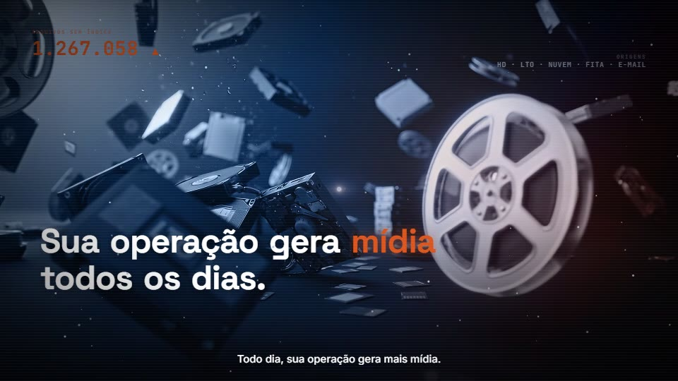
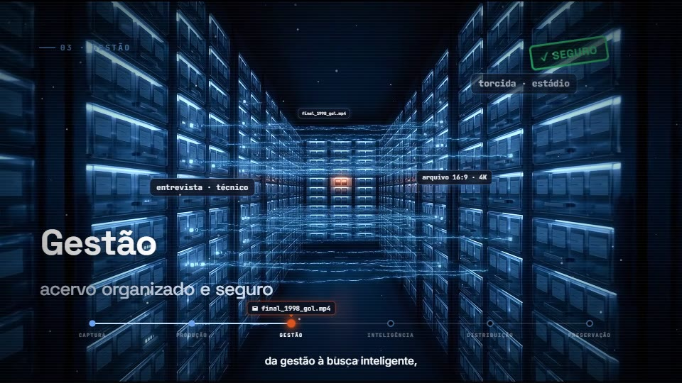
Você pediu: o gol de 1998 falhando na tela, o contador de integridade ligado à imagem e o chiado que corta seco, em vez da fita solta no vazio.
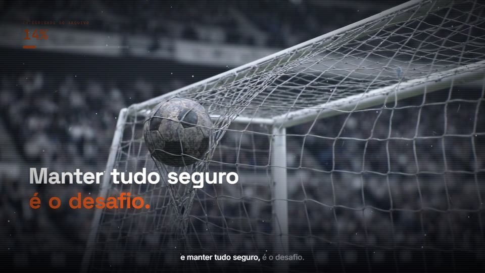
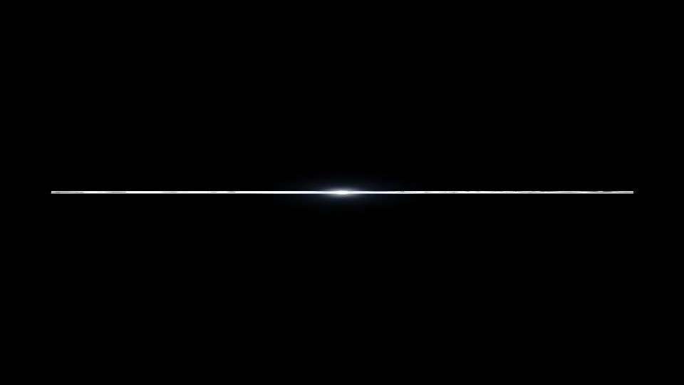
Você pediu: o núcleo e os arcos da marca no lugar dos círculos genéricos, na ordem núcleo → anel médio → anel externo, com um pulso grave a cada arco e a frase completa.
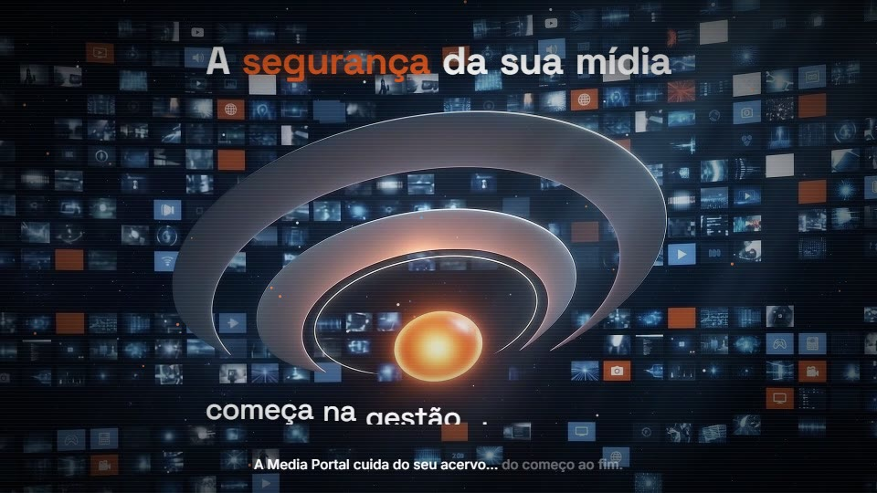
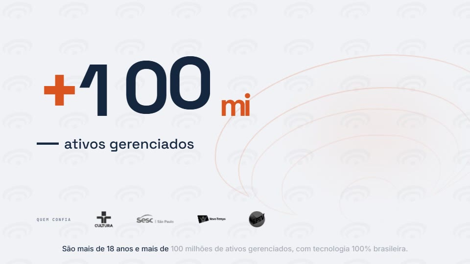
Seguimos a sua ideia: o mesmo gol de 1998 que a busca não encontra no começo passa pelas seis etapas e termina íntegro e no ar.
| Etapa | Como você imaginou | Como ficou na v2 |
|---|---|---|
| Captura | O jogo chega e vira arquivo | Os fluxos de luz convergem numa linha e o final_1998_gol.mp4 entra na régua. |
| Produção | Dois editores cortam o lance juntos | Dois cursores, Editor A e Editor B, editam o “Lance do gol · 1998” ao mesmo tempo. |
| Gestão | O arquivo ganha as tags | As tags “gol · final · 1998” passam pelo corredor de dados e o selo ✓ SEGURO entra em verde. |
| Inteligência | Mostrar que leva segundos | A busca encontra “3 cenas em 2 segundos · 98%” e o lance sobe em destaque: “Achou em segundos.” |
| Distribuição | O gol vai ao ar no playout | O mesmo arquivo sai para Playout (“Gol 1998 · ao vivo”), OTT e Web. |
| Preservação | O gol que falhava, agora íntegro | “Final 1998 · gol íntegro”, guardado em nuvem e local por décadas. |
| Onde | Sua nota | Na v2 |
|---|---|---|
| Fita | Título e legenda diferentes | feito Tela e legenda dizem o mesmo: “Manter tudo seguro é o desafio.” |
| Virada | A frase parava no meio | feito “…começa na gestão do seu acervo.” |
| IA | “IA offline” passava rápido | feito A cena ganhou tempo e diz “IA offline · o acervo não sai de casa”. |
| Números | “+100 mi” repetia a ideia | feito “+100 mi · ativos gerenciados”. |
| Números | Legenda com 2 números, tela com 4 | feito Os mesmos três números na tela e na fala: +18 anos, +100 mi, 100% brasileira. |
| Quem confia | Logos eram caixas vazias | com você Entraram os logos reais de TV Cultura, Sesc SP, Novo Tempo e EPTV. Sem autorização, a linha sai. |
A legenda continua palavra por palavra, agora sincronizada com a fala do narrador: a frase aparece clara e cada palavra fica forte no instante em que é dita.
| Bloco | v1 | Sua proposta | v2 |
|---|---|---|---|
| Problema | 12 s | 11 s | 11,2 s |
| Virada | 4 s | 5 s | 5,0 s |
| Seis etapas | 23 s | 22 s | 22,5 s |
| Números | 8 s | 5 s | 7,2 s |
| Final | 7 s | 7 s | 9,0 s |
| Total | 54 s | ~50 s | 54,9 s |
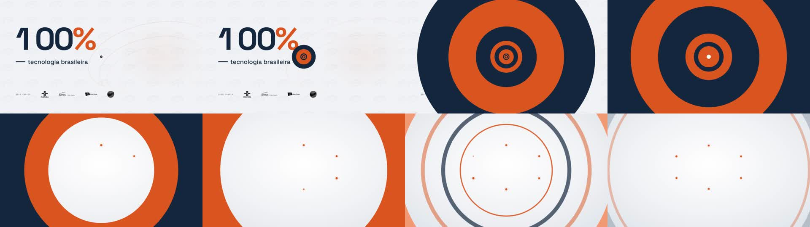
Você pediu: o logo oficial, reto e sem perspectiva; os seis pontos da jornada antes do logo; um botão que leve a algum lugar.
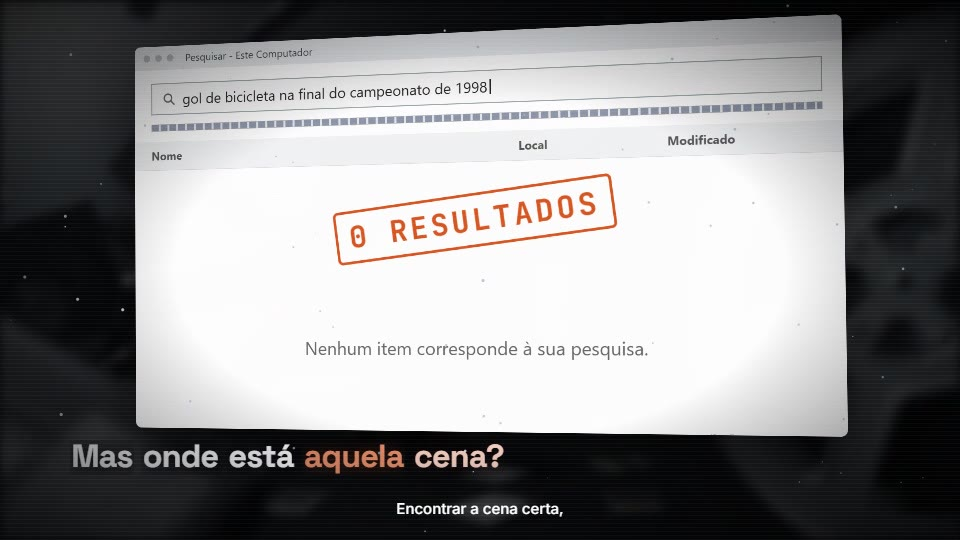
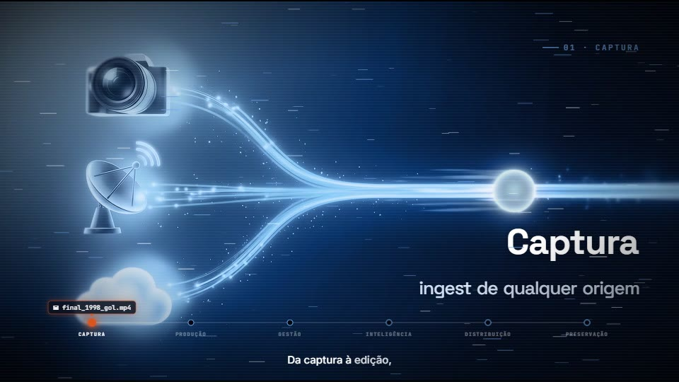
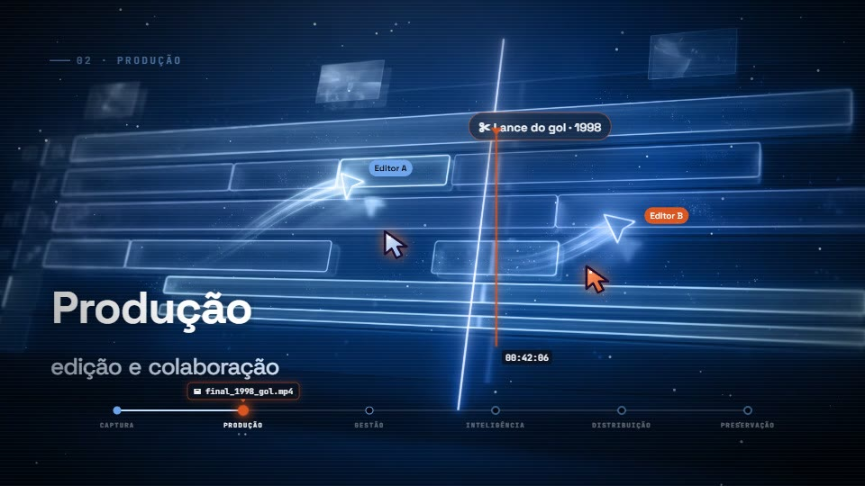
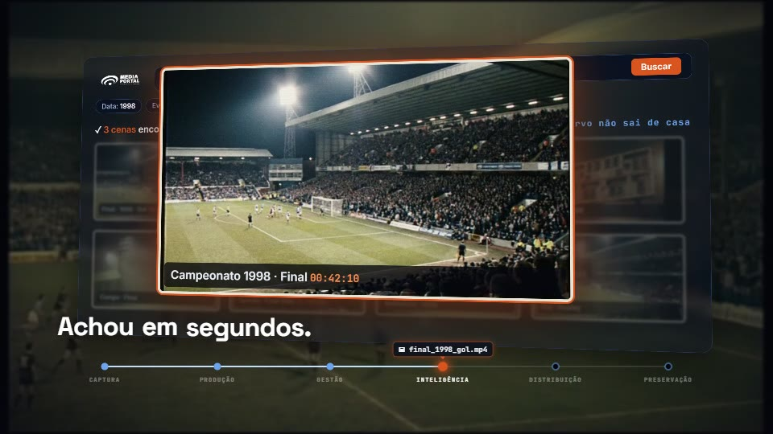
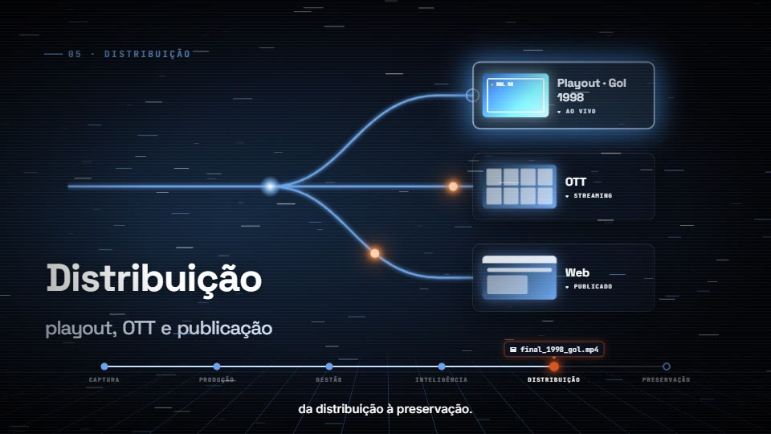
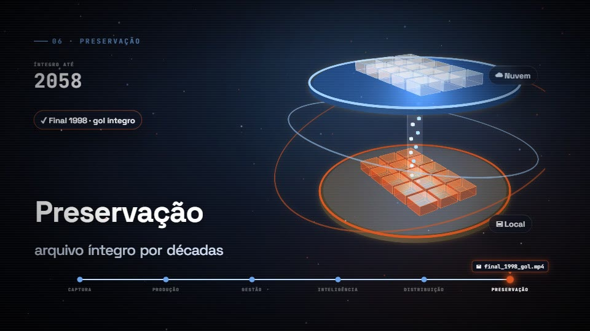